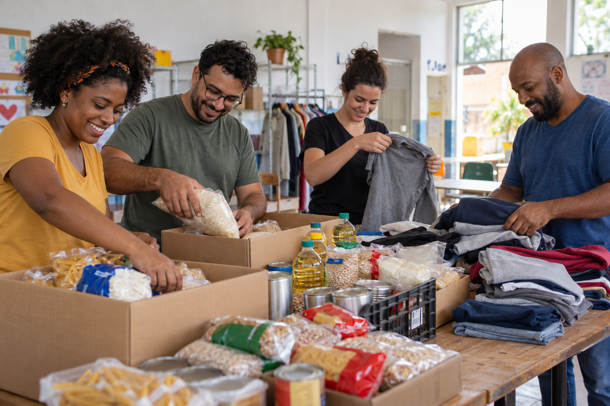

Quem somos
A ONG Laços Solidários conecta pessoas dispostas a ajudar famílias em vulnerabilidade, bem como mendigos e animais abandonados. Organizamos campanhas de arrecadação de alimentos não perecíveis, roupas e livros, e contamos com o apoio de voluntários.

Nossa missão
Mobilizar a comunidade para oferecer apoio material e humano a quem mais precisa.